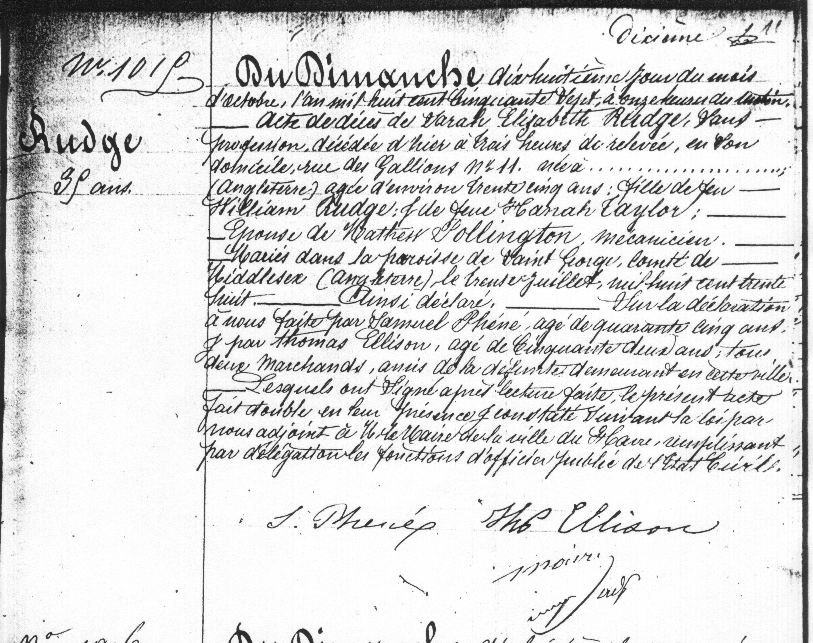

This is an image of Sarah Elizabeth nee Rudge Pollington's record of death, followed by a complete translation.

"No. 1015 Rudge 35 years old Sunday, the eighteenth day of the month of October, eighteen hundred fifty seven, at eleven in the morning. Certificate of the death of Sarah Elizabeth Rudge, no profession, deceased yesterday at 3 in the morning [?] at her home on Rue des Gallions no. 11, born on ... England, about 35 years old, daughter of the late William Rudge and the late Hannah Taylor. wife of Matthew Pollington, engineer, married in the Parish of Saint George, County of Middlesex, England the thirtieth of July, one thousand eight hundred thirty eight. Thus declare. On the declaration made to us by Samuel Phene, age forty-five years old, and by Thomas Ellison, age fifty-two years old, two merchants, friends of the deceased, residing in this town, After it was read, they signed the present act completed in their presence, certified according to the law by by us, adjunct to the provisional mayor of the town of Le Havre, and completed by the delegated functions of the pubic officer of the state. S. Phere Thos. Ellison Maire"